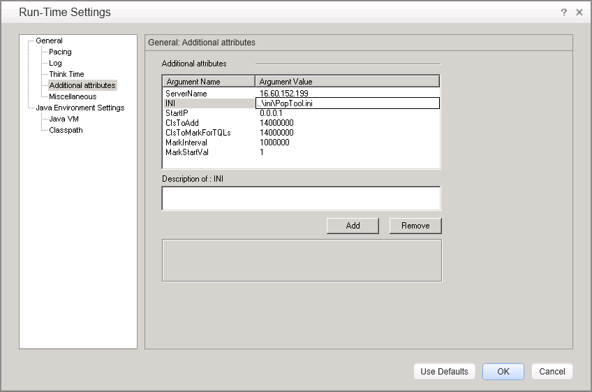
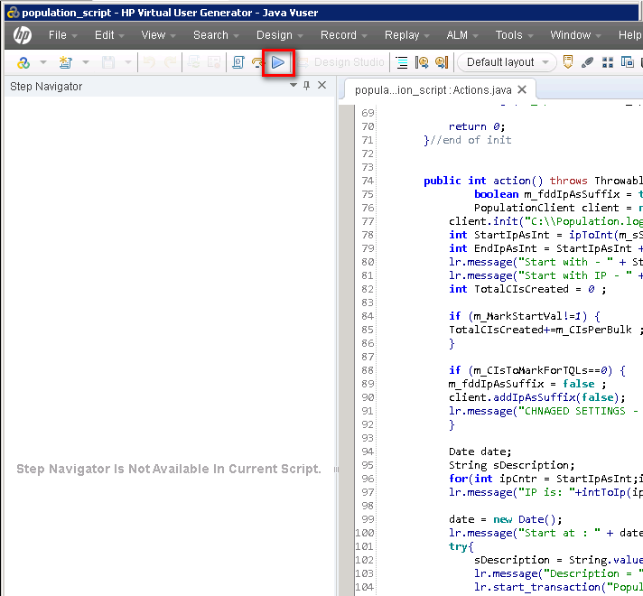

You can download LoadRunner 11.52 from the link listed blow: https://h20575.www2.hp.com/evalportal/displayProductsList.do?prdcenter=HPSS_PC
Since the LoadRunner 11.52 use the "Java Protocal", so you have to install the JDK 1.7 32bit version.
If you use the rest of JDK versions, it might ran into some issue.
Here is the UCMDB hardware recommendation for enterprise deployment
| Usage | CPU | RAM | Storage(free space) |
|---|---|---|---|
| UCMDB Server | 24 Cores | 32 GB | 50G |
| UCMDB Browser | 12 Cores | 16 GB | 10 GB |
| Oracle Database | 24 Cores | 64 GB | 500G |
| HP LoadRunner | 12 Cores | 16 GB | 10 GB |
We need to create theTQL and Enrichment in UCMDB server for the test. Go to the UCMDB admin UI, goto Managers->Administration->Package Manager > Deploy package to Server
Select the file "system-test-enrichments-tqls.zip" under the "package" folder of CMS performance kit.
In order to run the performacne test, we need to parepare the testing data for the test.
Open the LoadRunner Script under "population" folder. Open the "population_script.usr" in LoadRunner vUgen.
In LoadRunner Virtual User Generator, go to "Replay" -> "Run-Time Settings"

add the following jars into the classpath
Click the Run button to execute the test
